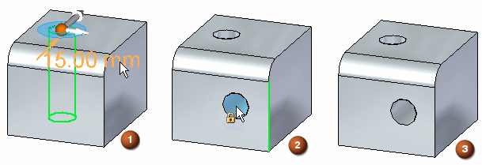

Hole command bar (synchronous)
- Options
-
Displays the Hole Options dialog box so you can define the hole parameters.
- Saved Settings Gallery
-
Displays a list of saved hole types. When you select a hole, the hole updates dynamically, based on the characteristics of the hole.
- Physical Thread
-
Creates physical threads on a threaded hole feature. When deselected, cosmetic threads are displayed.
You can specify Thread direction (left-handed
 or right-handed
or right-handed  ) to physical threads using the Hole Options dialog box (Threaded).Note:
) to physical threads using the Hole Options dialog box (Threaded).Note:This option is enabled by default. There is a possible performance impact when creating thread geometry. The system administrator can disable the Physical Thread option on the Solid Edge Administrator dialog box.
Note:Physical Thread is only available for Standard Thread and is not available for Straight Pipe Thread and Tapered Pipe Thread.
- Extents
-
Defines the depth of the feature or the distance to extend the profile to construct the feature.
- Through All
-
Sets the feature extent so that the hole is extended through all faces of the part, starting at the profile plane. You can extend the hole to either side of the profile plane, or to both sides.
- Through Next
-
Sets the feature extent so that the hole is extended through only the next face on the selected side. The next face is defined as the closest face where the hole circle forms a closed intersection with the part. You can extend the hole to either side of the profile plane, or to both sides.
- Finite
-
Sets the feature extent so that the hole is extended a finite distance to either side of the profile plane, or symmetrically to both sides of the profile plane. Type the distance into the Distance box on the command bar.
- Keypoints
-
Specifies the type of keypoint to locate by the operation.
- Toggle Dimension Axis
-
Changes the axis of a dimension. Use this option when placing holes that require the dimension direction to change.
- More Holes
-
Adds more occurrences for the selected hole. To add more hole occurrences, click the dimension for the hole (1), click the Add More button, drag the cursor to the new location (2), and click to place the new hole (3).

- Apply Cut Features
-
When more than one body exists in the file, this option is enabled.
Cut Active BodyThe hole only penetrates the active body.
Cut Selected BodiesThe hole penetrates all bodies it passes through. You can deselect bodies that the hole penetrates.